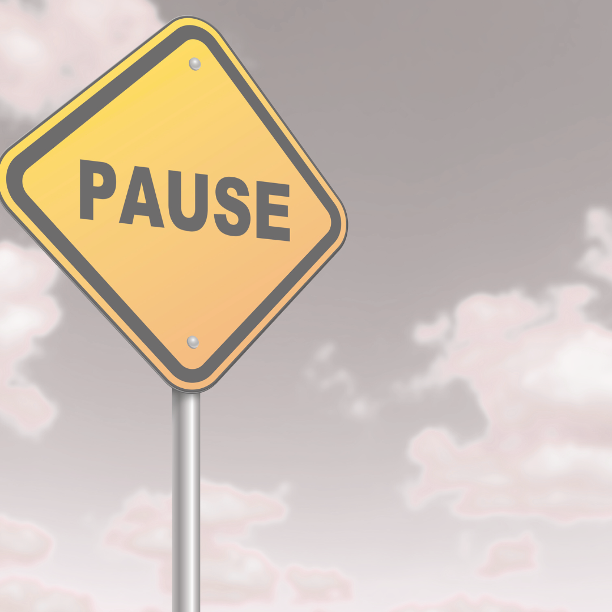
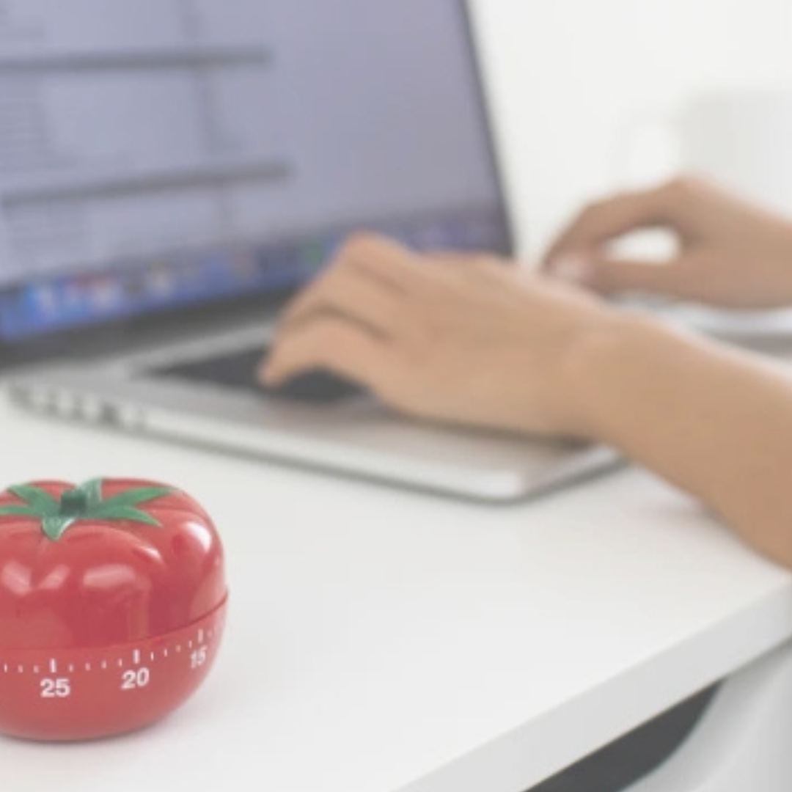
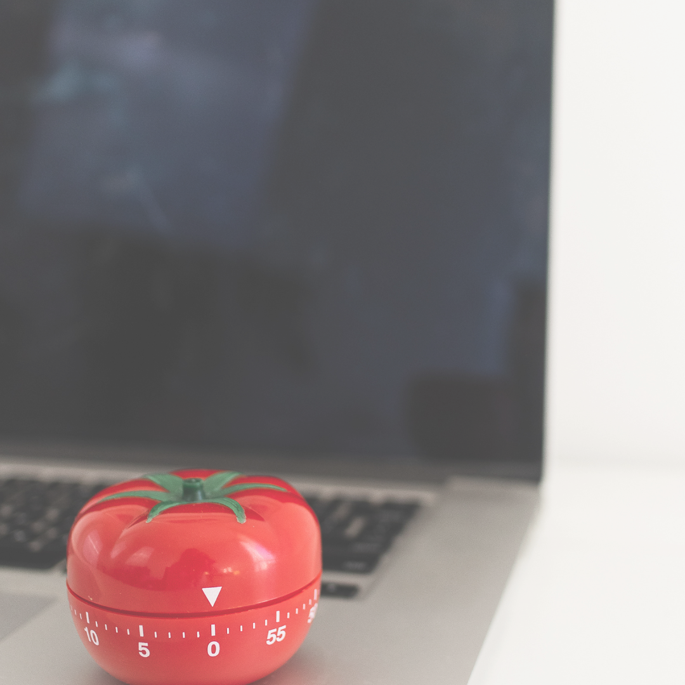

A técnica Pomodoro é um método de gestão de tempo criado por Francesco Cirillo, que ajuda a manter o foco e evitar a procastinção. A idéia é dividir o trabalho em blocos curtos de tempo chamados pomodoro, seguidos de pequenas pausas para descanso. 🍅
Selecione uma tarefa de sua lista

Dedique-se por 25 minutos na execução da tarefa escolhida

Faça uma pausa de 5 minutos

Inicie outro pomodoro (25minutos de dedicação + 5 minutos de pausa)

Após 4 "pomodoros" faça uma pausa de até 30 minutos

Inicie outro "ciclo" de pomodoros